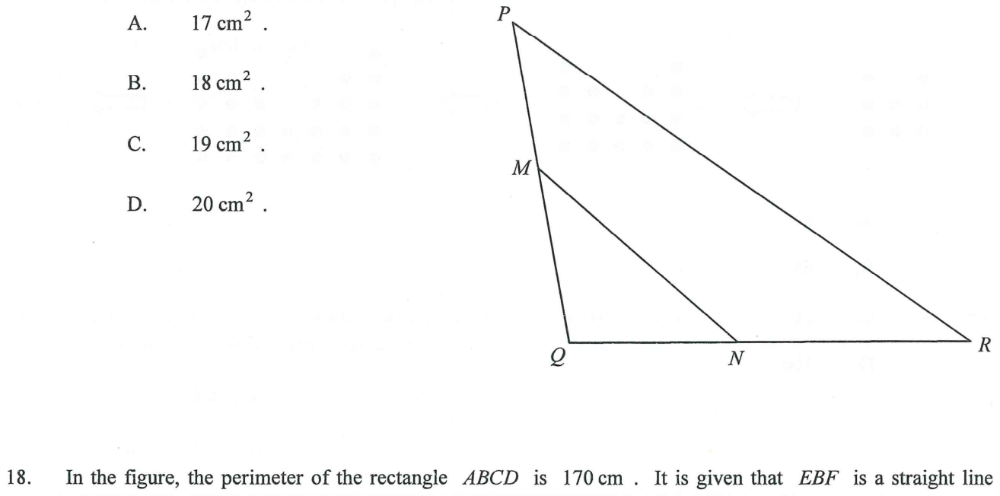

In the figure, M and N are points lying on PQ and QR respectively such that \(PM : MQ = 5 : 6\) and \(QN : NR = 3 : 4\). If the area of the quadrilateral \(MNRP\) is \(59\text{ cm}^2\), then the area of \(\Delta MNQ\) is

Let \(x\text{ cm}^2\) be the area of \(\Delta MNQ\), the target quantity.
Our plan: express the area of the large triangle \(\Delta PQR\) in terms of \(x\), then use the given area of the quadrilateral to form an equation.
Both triangles have their base on line \(PQ\), with the same perpendicular height from \(N\). Hence their areas are in the ratio of the bases:
$$\frac{[\Delta NPQ]}{[\Delta MNQ]}=\frac{PQ}{MQ}=\frac{5+6}{6}=\frac{11}{6}$$ $$\therefore\ [\Delta NPQ]=\frac{11}{6}x\ \text{cm}^2$$Both triangles have their base on line \(QR\) with the same perpendicular height from \(P\):
$$\frac{[\Delta PQR]}{[\Delta NPQ]}=\frac{QR}{QN}=\frac{QN+NR}{QN}=\frac{3+4}{3}=\frac{7}{3}$$So
$$[\Delta PQR]=\frac{11}{6}x\times\frac{7}{3}=\frac{77}{18}x\ \text{cm}^2$$The quadrilateral \(MNRP\) is the part of \(\Delta PQR\) left after removing the small triangle \(\Delta MNQ\):
$$[\ MNRP\ ]=[\Delta PQR]-[\Delta MNQ]=\frac{77}{18}x-x=\frac{59}{18}x\ \text{cm}^2$$Given that the area of \(MNRP\) is \(59\text{ cm}^2\):
$$\frac{59}{18}x=59 \quad\Longrightarrow\quad x=18$$Therefore the area of \(\Delta MNQ\) is \(18\text{ cm}^2\), i.e. answer B.
Question. In \(\triangle PQR\), \(M\) lies on \(PQ\) and \(N\) lies on \(QR\) with \(PM:MQ=2:3\) and \(QN:NR=1:2\). If the area of quadrilateral \(MNRP\) is \(80\text{ cm}^{2}\), find the area of \(\triangle MNQ\).
Method: split \(\Delta PQR\) by introducing \(MN\) and use the common-height area ratio twice.